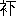
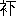

| 義血侠血 | |
| 泉 鏡花 | |
| (2012) | |
義血俠血
泉鏡花
一
越中高岡
より俱利伽羅下
の建場
なる石動
まで、四里八町が間を定時発の乗り合い馬車あり。
賃銭の廉
きがゆえに、旅客はおおかた人力車を捨ててこれに便
りぬ。車夫はその不景気を馬車会社に怨
みて、人と馬との軋轢
ようやくはなはだしきも、わずかに顔役の調和によりて、営業上相干
さざるを装えども、折に触れては紛乱を生ずることしばしばなりき。
七月八日の朝、一番発の馬車は乗り合いを揃
えんとて、奴
はその門前に鈴を打ち振りつつ、
「馬車はいかがです。むちゃに廉くって、腕車
よりお疾
うござい。さあお乗んなさい。すぐに出ますよ」
甲走
る声は鈴の音
よりも高く、静かなる朝の街
に響き渡れり。通りすがりの婀娜者
は歩みを停
めて、
「ちょいと小僧さん、石動までいくら？ なに十銭だとえ。ふう、廉いね。その代わりおそいだろう」
沢庵
を洗い立てたるように色揚げしたる編片
の古帽子の下より、奴
は猿眼
を晃
かして、
「ものは可試
だ。まあお召しなすってください。腕車よりおそかったら代は戴
きません」
かく言ううちも渠
の手なる鈴は絶えず噪
ぎぬ。
「そんなりっぱなことを言って、きっとだね」
奴は昂然
として、
「虚言
と坊主の髪
は、いったことはありません」
「なんだね、しゃらくさい」
微笑
みつつ女子
はかく言い捨てて乗り込みたり。
その年紀
は二十三、四、姿はしいて満開の花の色を洗いて、清楚
たる葉桜の緑浅し。色白く、鼻筋通り、眉
に力みありて、眼色
にいくぶんのすごみを帯び、見るだに涼しき美人なり。
これはたして何者なるか。髪は櫛巻
きに束
ねて、素顔を自慢に※脂
［＃「月＋因」、6-15］
のみを点
したり。服装
は、将棊
の駒
を大形に散らしたる紺縮みの浴衣
に、唐繻子
と繻珍
の昼夜帯をばゆるく引っ掛けに結びて、空色縮緬
の蹴出
しを微露
し、素足に吾妻下駄
、絹張りの日傘
に更紗
の小包みを持ち添えたり。
挙止
俠
にして、人を怯
れざる気色
は、世磨
れ、場慣れて、一条縄
の繫
ぐべからざる魂を表わせり。想
うに渠
が雪のごとき膚
には、剳青淋漓
として、悪竜
焰
を吐くにあらざれば、寡
なくも、その左の腕
には、双枕
に偕老
の名や刻みたるべし。
馬車はこの怪しき美人をもって満員となれり。発車の号令は割るるばかりにしばらく響けり。向者
より待合所の縁に倚
りて、一篇
の書を繙
ける二十四、五の壮佼
あり。盲縞
の腹掛け、股引
きに汚
れたる白小倉の背広を着て、ゴムの解
れたる深靴
を穿
き、鍔広
なる麦稈
帽子を阿弥陀
に被
りて、踏ん跨
ぎたる膝
の間に、茶褐色
なる渦毛
の犬の太くたくましきを容
れて、その頭を撫
でつつ、専念に書見したりしが、このとき鈴の音
を聞くと斉
しく身を起こして、ひらりと御者台に乗り移れり。
渠の形軀
は貴公子のごとく華車
に、態度は森厳
にして、そのうちおのずから活潑
の気を含めり。陋
しげに日に黧
みたる面
も熟視
れば、清※明眉
［＃「目＋盧」、7-12］
、相貌
秀
でて尋常
ならず。とかくは馬蹄
の塵
に塗
れて鞭
を揚
ぐるの輩
にあらざるなり。
御者は書巻を腹掛けの衣兜
に収め、革紐
を附
けたる竹根の鞭
を執
りて、徐
かに手綱を捌
きつつ身構うるとき、一輛
の人力車ありて南より来たり、疾風のごとく馬車のかたわらを掠
めて、瞬
く間
に一点の黒影となり畢
んぬ。
美人はこれを望みて、
「おい小僧さん、腕車
よりおそいじゃないか」
奴のいまだ答えざるに先だちて、御者はきと面を抗
げ、かすかになれる車の影を見送りて、
「吉公、てめえまた腕車より疾
えといったな」
奴は愛嬌
よく頭を搔
きて、
「ああ、言った。でもそう言わねえと乗らねえもの」
御者は黙して頷
きぬ。たちまち鞭の鳴るとともに、二頭の馬は高く嘶
きて一文字に跳
ね出
だせり。不意を吃
いたる乗り合いは、座に堪
らずしてほとんど転
び墜
ちなんとせり。奔馬
は中
を駈
けて、見る見る腕車を乗っ越したり。御者はやがて馬の足搔
きを緩
め、渠に先を越させぬまでに徐々として進行しつ。
車夫は必死となりて、やわか後
れじと焦
れども、馬車はさながら月を負いたる自家
の影のごとく、一歩を進むるごとに一歩を進めて、追えども追えども先んじがたく、ようよう力衰え、息逼
りて、今や殪
れぬべく覚ゆるころ、高岡より一里を隔つる立野
の駅に来たりぬ。
この街道
の車夫は組合を設けて、建場建場に連絡を通ずるがゆえに、今この車夫が馬車に後
れて、喘
ぎ喘ぎ走るを見るより、そこに客待ちせる夥間
の一人は、手に唾
して躍
り出で、
「おい、兄弟
しっかりしなよ。馬車の畜生どうしてくりょう」
やにわに対曳
きの綱を梶棒
に投げ懸
くれば、疲れたる車夫は勢いを得て、
「ありがてえ！ 頼むよ」
「合点
だい！」
それと言うまま挽
き出だせり。二人の車夫は勇ましく相呼び相応
えつつ、にわかに驚くべき速力をもて走りぬ。やがて町はずれの狭く急なる曲がりかどを争うと見えたりしが、人力車
は無二無三に突進して、ついに一歩を抽
きけり。
車夫は諸声
に凱歌
を揚げ、勢いに乗じて二歩を抽き、三歩を抽き、ますます馳
せて、軽迅丸
の跳
るがごとく二、三間を先んじたり。
向者
は腕車を流眄
に見て、いとも揚々たりし乗り合いの一人
は、
「さあ、やられた！」と身を悶
えて騒げば、車中いずれも同感の色を動かして、力瘤
を握るものあり、地蹈韛
を踏むもあり、奴を叱
してしきりに喇叭
を吹かしむるもあり。御者は縦横に鞭を揮
いて、激しく手綱を搔
い繰れば、馬背の流汗滂沱
として掬
すべく、轡頭
に嚙
み出
だしたる白泡
は木綿
の一袋もありぬべし。
かかるほどに車体は一上一下と動揺して、あるいは頓挫
し、あるいは傾斜し、ただこれ風の落ち葉を捲
き、早瀬の浮き木を弄
ぶに異ならず。乗り合いは前後に俯仰
し、左右に頽
れて、片時
も安き心はなく、今にもこの車顚覆
るか、ただしはその身投げ落とさるるか。いずれも怪我
は免
れぬところと、老いたるは震い慄
き、若きは凝瞳
になりて、ただ一秒ののちを危ぶめり。
七、八町を競争して、幸いに別条なく、馬車は辛くも人力車を追い抽きぬ。乗り合いは思わず手を拍
ちて、車も憾
くばかりに喝采
せり。奴は凱歌
の喇叭を吹き鳴らして、後
れたる人力車を麾
きつつ、踏み段の上に躍れり。ひとり御者のみは喜ぶ気色
もなく、意
を注ぎて馬を労
り駈
けさせたり。
怪しき美人は満面に笑
みを含みて、起伏常ならざる席に安んずるを、隣たる老人は感に堪えて、
「おまえさんどうもお強い。よく血の道が発
りませんね。平気なものだ、女丈夫
だ。私
なんぞはからきし意気地
はない。それもそのはずかい、もう五十八だもの」
その言
の訖
わらざるに、車は凸凹路
を踏みて、がたくりんと跌
きぬ。老夫
は横様に薙仆
されて、半ば禿
げたる法然頭
はどっさりと美人の膝に枕
せり。
「あれ、あぶない！」
と美人はその肩をしかと抱
きぬ。
老夫はむくむく身を擡
げて、
「へいこれは、これはどうもはばかり様。さぞお痛うございましたろう。御免なすってくださいましよ。いやはや、意気地はありません。これさ馬丁
さんや、もし若い衆
さん、なんと顚覆
るようなことはなかろうの」
御者は見も返らず、勢籠
めたる一鞭
を加えて、
「わかりません。馬が跌きゃそれまででさ」
老夫は眼
を円
くして狼狽
えぬ。
「いやさ、転
ばぬ前
の杖
だよ。ほんにお願いだ、気を着けておくれ。若い人と違って年老
のことだ、放
り出されたらそれまでだよ。もういいかげんにして、徐々
とやってもらおうじゃないか。なんと皆さんどうでございます」
「船に乗れば船頭任せ。この馬車にお乗んなすった以上は、わたしに任せたものとして、安心しなければなりません」
「ええ途方もない。どうして安心がなるものか」
呆
れはてて老夫は呟
けば、御者ははじめて顧みつ。
「それで安心ができなけりゃ、御自分の脚
で歩くです」
「はいはい。それは御深切に」
老夫は腹だたしげに御者の面
を偸視
せり。
後れたる人力車は次の建場にてまた一人を増して、後押
しを加えたれども、なおいまだ逮
ばざるより、車夫らはますます発憤して、悶
ゆる折から松並み木の中ほどにて、前面
より空車
を挽
き来たる二人の車夫に出会いぬ。行き違いさまに、綱曳
きは血声
を振り立て、
「後生だい、手を仮
してくんねえか。あの瓦多
馬車の畜生、乗っ越さねえじゃ」
「こっとらの顔が立たねえんだ」と他の一箇
は叫べり。
血気事を好む徒
は、応と言うがままにその車を道ばたに棄
てて、総勢五人の車夫は揉
みに揉んで駈けたりければ、二、三町ならずして敵に逐
い着き、しばらくは相並びて互いに一歩を争いぬ。
そのとき車夫はいっせいに吶喊
して馬を駭
ろかせり。馬は懾
えて躍り狂いぬ。車はこれがために傾斜して、まさに乗り合いを振り落とさんとせり。
恐怖、叫喚、騒擾
、地震における惨状は馬車の中
に顕
われたり。冷々然たるはひとりかの怪しき美人のみ。
一身をわれに任せよと言いし御者は、風波に掀翻
せらるる汽船の、やがて千尋
の底に汨没
せんずる危急に際して、蒸気機関はなお漾
々たる穏波を截
ると異ならざる精神をもって、その職を竭
くすがごとく、従容
として手綱を操り、競争者に後
れず前
まず、隙
だにあらば一躍して乗っ越さんと、睨
み合いつつ推し行くさまは、この道堪能
の達者と覚しく、いと頼もしく見えたりき。
されども危急の際この頼もしさを見たりしは、わずかにくだんの美人あるのみなり。他はみな見苦しくも慌
て忙
きて、あまたの神と仏とは心々に禱
られき。なおかの美人はこの騒擾の間、終始御者の様子を打ち瞶
りたり。
かくて六箇
の車輪はあたかも同一
の軸にありて転ずるごとく、両々相並びて福岡
というに着けり。ここに馬車の休憩所ありて、馬に飲
い、客に茶を売るを例とすれども、今日
ばかりは素通りなるべし、と乗り合いは心々に想
いぬ。
御者はこの店頭
に馬を駐
めてけり。わが物得つと、車夫はにわかに勢いを増して、手を揮
り、声を揚
げ、思うままに侮辱して駈け去りぬ。
乗り合いは切歯
をしつつ見送りたりしに、車は遠く一団の砂煙
に裹
まれて、ついに眼界のほかに失われき。
旅商人体
の男は最も苛
ちて、
「なんと皆さん、業肚
じゃございませんか。おとなげのないわけだけれど、こういう行き懸かりになってみると、どうも負けるのは残念だ。おい、馬丁
さん、早く行
ってくれたまえな」
「それもそうですけれどもな、老者
はまことにはやどうも。第一この疝
に障
りますのでな」
と遠慮がちに訴うるは、美人の膝枕せし老夫
なり。馬は群がる蠅
と虻
との中に優々と水飲み、奴は木蔭
の床几
に大の字なりに僵
れて、むしゃむしゃと菓子を吃
らえり。御者は框
に息
いて巻き莨
を燻
しつつ茶店の嚊
と語
りぬ。
「こりゃ急に出そうもない」と一人が呟
けば、田舎
女房と見えたるがその前面
にいて、
「憎々しく落ち着いてるじゃありませんかね」
最初の発言者
はますます堪えかねて、
「ときに皆さん、あのとおり御者も骨を折りましたんですから、お互い様にいくらか酒手を奮
みまして、もう一骨折ってもらおうじゃございませんか。なにとぞ御賛成を願います」
渠は直ちに帯佩
げの蟇口
を取り出して、中なる銭を撈
りつつ、
「ねえあなた、ここでああ惰
けられてしまった日には、仏造って魂入れずでさ、冗談じゃない」
やがて銅貨三銭をもって隗
より始めつ。帽子を脱ぎてその中に入れたるを、衆人
の前に差し出して、渠はあまねく義捐
を募れり。
あるいは勇んで躍り込みたる白銅あり。あるいはしぶしぶ捨てられたる五厘もあり。ここの一銭、かしこの二銭、積もりて十六銭五厘とぞなりにける。
美人は片すみにありて、応募の最終なりき。隗の帽子は巡回して渠の前に着せるとき、世話人は辞
を卑
うして挨拶
せり。
「とんだお附
き合いで、どうもおきのどく様でございます」
美人は軽
く会釈するとともに、その手は帯の間に入りぬ。小菊にて上包みせる緋塩瀬
の紙入れを開きて、渠はむぞうさに半円銀貨を投げ出だせり。
余所目
に瞥
たる老夫はいたく驚きて面
を背
けぬ、世話人は頭を搔
きて、
「いや、これは剰銭
が足りない。私もあいにく小
かいのが......」
と腰なる蟇口に手を掛くれば、
「いいえ、いいんですよ」
世話人は呆
れて叫びぬ。
「これだけ？ 五十銭！」
これを聞ける乗り合いは、さなきだに、何者なるか、怪しき別品と目を着けたりしに、今この散財
の婦女子
に似気なきより、いよいよ底気味悪く訝
れり。
世話人は帽子を揺り動かして銭を鳴らしつつ、
「〆
て金六十六銭と五厘！ たいしたことになりました。これなら馬は駈けますぜ」
御者はすでに着席して出発の用意せり。世話人は酒手を紙に包みて持ち行きつ。
「おい、若い衆さん、これは皆さんからの酒手だよ。六十六銭と五厘あるのだ。なにぶんひとつ奮発してね。頼むよ」
渠は気軽に御者の肩を拊
きて、
「隊長、一晩遊べるぜ」
御者は流眄
に紙包みを見遣
りて空嘯
きぬ。
「酒手で馬は動きません」
わずかに五銭六厘を懐
にせる奴は驚きかつ惜しみて、有意的
に御者の面
を眺
めたり。好意を無にせられたる世話人は腹立ちて、
「せっかく皆さんが下さるというのに、それじゃいらないんだね」
車は徐々として進行せり。
「戴
く因縁がありませんから」
「そんな生意気なことを言うもんじゃない。骨折り賃だ。まあ野暮を言わずに取っときたまえてことさ」
六十六銭五厘はまさに御者のポケットに闖入
せんとせり。渠は固
く拒
みて、
「思し召しはありがとうございますが、規定
の賃銭のほかに骨折り賃を戴く理由
がございません」
世話人は推し返されたる紙包みを持て扱いつつ、
「理由
も糸瓜
もあるものかな。お客が与
るというんだから、取っといたらいいじゃないか。こういうものを貰
って済まないと思ったら、一骨折って今の腕車
を抽
いてくれたまえな」
「酒手なんぞは戴かなくっても、十分骨は折ってるです」
世話人は冷笑
いぬ。
「そんなりっぱな口を※
［＃「口＋世」、16-16］
いたって、約束が違や世話はねえ」
御者はきと振り顧
りて、
「なんですと？」
「この馬車は腕車より迅
いという約束だぜ」
儼然
として御者は答えぬ。
「そんなお約束はしません」
「おっと、そうは言わせない。なるほど私たちにはしなかったが、この姉
さんにはどうだい。六十六銭五厘のうち、一人で五十銭の酒手をお出しなすったのはこのかただよ。あの腕車より迅く行ってもらおうと思やこそ、こうして莫大
な酒手も奮
もうというのだ。どうだ、先生、恐れ入ったか」
鼻蠢
かして世話人は御者の背
を指もて撞
きぬ。渠は一言
を発せず、世話人はすこぶる得意なりき。美人は戯るるがごとくに詰
れり。
「馬丁さん、ほんとに約束だよ、どうしたってんだね」
なお渠は緘黙
せり。その脣
を鼓動すべき力は、渠の両腕に奮いて、馬蹄
たちまち高く挙
ぐれば、車輪はその輻
の見るべからざるまでに快転せり。乗り合いは再び地上の瀾
に盪
られて、浮沈の憂
き目に遭
いぬ。
縦騁
五分間ののち、前途はるかに競争者の影を認め得たり。しかれども時遅れたれば、容易に追迫すべくもあらざりき。しこうして到着地なる石動
はもはや間近になれり。今にして一躍のもとに乗り越さずんば、ついに失敗
を取らざるを得ざるべきなり。憐
れむべし過度の馳騖
に疲れ果てたる馬は、力なげに俛
れたる首を聯
べて、策
てども走れども、足は重りて地を離れかねたりき。
何思いけん、御者は地上に下り立ちたり。乗り合いはこはそもいかにと見る間に、渠は手早く、一頭の馬を解き放ちて、
「姉さん済みませんが、ちょっと下りてください」
乗り合いは顔を見合わせて、この謎
を解くに苦しめり。美人は渠の言うがままに車を下れば、
「どうかこちらへ」と御者はおのれの立てる馬のそばに招きぬ。美人はますますその意を得ざれども、なお渠の言うがままに進み寄りぬ。御者はものをも言わず美人を引っ抱えて、ひらりと馬に跨
りたり。
魂消
たるは乗り合いなり。乗り合いは実に魂消たるなり。渠らは千体仏のごとく面
を鳩
め、あけらかんと頤
を垂れて、おそらくは画
にも観
るべからざるこの不思議の為体
に眼
を奪われたりしに、その馬は奇怪なる御者と、奇怪なる美人と、奇怪なる挙動
とを載せてましぐらに馳
せ去りぬ。車上の見物はようやくわれに復
りて響動
めり。
「いったいどうしたんでしょう」
「まず乗せ逃げとでもいうんでしょう」
「へえ、なんでございます」
「客の逃げたのが乗り逃げ。御者のほうで逃げたのだから乗せ逃げでしょう」
例の老夫は頭を悼
り悼り呟
けり。
「いや洒落
どころか。こりゃ、まあどうしてくれるつもりだ」
不審の眉
を攢
めたる前
の世話人は、腕を拱
きつつ座中を眗
して、
「皆さん、なんと思し召す？ こりゃ尋常事
じゃありませんぜ。ばかを見たのはわれわれですよ。全く駈
け落ちですな。どうもあの女がさ、尋常
の鼠
じゃあんめえと睨
んでおきましたが、こりゃあまさにそうだった。しかしいい女だ」
「私は急ぎの用を抱
えている身
だから、こうして安閑
としてはいられない。なんとこの小僧に頼んで、一匹の馬で遣
ってもらおうじゃございませんか。ばかばかしい、銭を出して、あの醜態
を見せられて、置き去りを吃
うやつもないものだ」
「全くそうでごさいますよ。ほんとに巫山戯
た真似
をする野郎だ。小僧早く遣ってくんな」
奴
は途方に暮れて、曩
より車の前後に出没したりしが、
「どうもおきのどく様です」
「おきのどく様は知れてらあ。いつまでこうしておくんだ。早く遣ってくれ、遣ってくれ！」
「私にはまだよく馬が動きません」
「活
きてるものの動かないという法があるものか」
「臀部
を引
っ撲
け引っ撲け」
奴は苦笑いしつつ、
「そんなことを言ったっていけません。二頭曳
きの車ですから、馬が一匹じゃ遣り切れません」
「そんならここで下りるから銭を返してくれ」
腹立つ者、無理言う者、呟く者、罵
る者、迷惑せる者、乗り合いの不平は奴の一身に湊
まれり。渠はさんざんに苛
まれてついに涙ぐみ、身の措
き所に窮して、辛くも車の後
に竦
みたりき。乗り合いはますます躁
ぎて、敵手
なき喧嘩
に狂いぬ。
御者は真一文字に馬を飛ばして、雲を霞
と走りければ、美人は魂身に添わず、目を閉じ、息を凝らし、五体を縮めて、力の限り渠の腰に縋
りつ。風は※々
［＃「風にょう」＋「容」の「口」に代えて「又」、20-11］
と両腋
に起こりて毛髪竪
ち、道はさながら河
のごとく、濁流脚下に奔注
して、身はこれ虚空を転
ぶに似たり。
渠は実に死すべしと念
いぬ。しだいに風歇
み、馬駐
まると覚えて、直ちに昏倒
して正気
を失いぬ。これ御者が静かに馬より扶
け下ろして、茶店の座敷に舁
き入れたりしときなり。渠はこの介抱を主
の嫗
に嘱
みて、その身は息をも継
かず再び羸馬
に策
ちて、もと来し路
を急ぎけり。
ほどなく美人は醒
めて、こは石動の棒端
なるを覚
りぬ。御者はすでにあらず。渠はその名を嫗に訊
ねて、金さんなるを知りぬ。その為人
を問えば、方正謹厳、その行ないを質
せば学問好き。
二
金沢なる浅野川の磧
は、宵々ごとに納涼の人出のために熱了せられぬ。この節を機として、諸国より入り込みたる野師らは、磧も狭しと見世物小屋を掛け聯
ねて、猿芝居
、娘軽業
、山雀
の芸当、剣の刃渡り、活
き人形、名所の覗
き機関
、電気手品、盲人相撲
、評判の大蛇
、天狗
の骸骨
、手なし娘、子供の玉乗りなどいちいち数うるに遑
あらず。
なかんずく大評判、大当たりは、滝の白糸が水芸
なり。太夫
滝の白糸は妙齢一八、九の別品にて、その技芸は容色と相称
いて、市中の人気山のごとし。されば他はみな晩景の開場なるにかかわらず、これのみひとり昼夜二回の興行ともに、その大入りは永当
たり。
時まさに午後一時、撃柝
一声、囃子
は鳴りを鎮
むるとき、口上は渠
がいわゆる不弁舌なる弁を揮
いて前口上を陳
べ了
われば、たちまち起こる緩絃
朗笛の節
を履
みて、静々歩み出でたるは、当座の太夫元滝の白糸、高島田に奴元結
い掛けて、脂粉こまやかに桃花の媚
びを粧
い、朱鷺
色縮緬
の単衣
に、銀糸の浪
の刺繡
ある水色絽
の 
を着けたり。渠はしとやかに舞台よき所に進みて、一礼を施せば、待ち構えたりし見物は声々に喚
きぬ。

を着けたり。渠はしとやかに舞台よき所に進みて、一礼を施せば、待ち構えたりし見物は声々に喚
きぬ。
「いよう、待ってました大明神
様！」
「あでやかあでやか」
「ようよう金沢暴
し！」
「ここな命取り！」
喝采
の声のうちに渠は徐
かに面
を擡
げて、情を含みて浅笑せり。口上は扇を挙
げて一咳
し、
「東西！ お目通りに控えさせましたるは、当座の太夫元滝の白糸にござりまする。お目見え相済みますれば、さっそくながら本芸に取り掛からせまする。最初腕調
べとして御覧に入れまするは、露に蝶
の狂いを象
りまして、（花野の曙
）。ありゃ来た、よいよいよいさて」
さて太夫はなみなみ水を盛りたるコップを左手
に把
りて、右手
には黄白
二面の扇子を開き、やと声発
けて交互
に投げ上ぐれば、露を争う蝶一双
、縦横上下に逐
いつ、逐われつ、雫
も滴
さず翼も息
めず、太夫の手にも住
まらで、空に文
織る練磨
の手術、今じゃ今じゃと、木戸番は濁声
高く喚
わりつつ、外面
の幕を引き揚
げたるとき、演芸中の太夫はふと外
の方
に眼を遣
りたりしに、何にか心を奪われけん、はたとコップを取り落とせり。
口上は狼狽
して走り寄りぬ。見物はその為損
じをどっと囃
しぬ。太夫は受け住
めたる扇を手にしたるまま、その瞳
をなお外の方に凝らしつつ、つかつかと土間に下りたり。
口上はいよいよ狼狽して、為
ん方を知らざりき。見物は呆
れ果てて息を斂
め、満場斉
しく頭
を回
らして太夫の挙動
を打ち瞶
れり。
白糸は群れいる客を推し排
け、搔
き排け、
「御免あそばせ、ちょいと御免あそばせ」
あわただしく木戸口に走り出で、項
を延べて目送せり。その視線中に御者体の壮佼
あり。
何事や起こりたると、見物は白糸の踵
より、どろどろと乱れ出ずる喧擾
に、くだんの男は振り返りぬ。白糸ははじめてその面
を見るを得たり。渠は色白く瀟洒
なりき。
「おや、違ってた！」
かく独語
ちて、太夫はすごすご木戸を入りぬ。
三
夜
はすでに十一時に近づきぬ。磧
は凄涼
として一箇
の人影
を見ず、天高く、露気
ひややかに、月のみぞひとり澄めりける。
熱鬧
を極
めたりし露店はことごとく形を斂
めて、ただここかしこに見世物小屋の板囲いを洩
るる燈火
は、かすかに宵のほどの名残
を留
めつ。河
は長く流れて、向山
の松風静かに度
る処
、天神橋の欄干に靠
れて、うとうとと交睫
む漢子
あり。
渠
は山に倚
り、水に臨み、清風を担
い、明月を戴
き、了然たる一身、蕭然
たる四境、自然の清福を占領して、いと心地
よげに見えたりき。
折から磧の小屋より顕
われたる婀娜者
あり。紺絞りの首抜きの浴衣
を着て、赤毛布
を引き絡
い、身を持て余したるがごとくに歩みを運び、下駄
の爪頭
に戞々
と礫
を蹴遣
りつつ、流れに沿いて逍遥
いたりしが、瑠璃
色に澄み渡れる空を打ち仰ぎて、
「ああ、いいお月夜だ。寝るには惜しい」
川風はさっと渠の鬢
を吹き乱せり。
「ああ、薄ら寒くなってきた」
しかと毛布
を絡
いて、渠はあたりを眗
しぬ。
「人っ子一人いやしない。なんだ、ほんとに、暑いときはわあわあ騒いで、涼しくなる時分には寝てしまうのか。ふふ、人間というものはいこじなもんだ。涼むんならこういうときじゃないか。どれ、橋の上へでも行ってみようか。人さえいなけりゃ、どこでもいい景色
なもんだ」
渠は再び徐々として歩を移せり。
この女は滝の白糸なり。渠らの仲間は便宜上旅籠
を取らずして、小屋を家とせるもの寡
なからず。白糸も然
なり。
やがて渠は橋に来りぬ。吾妻下駄
の音は天地の寂黙
を破りて、からんころんと月に響けり。渠はその音の可愛
さに、なおしいて響かせつつ、橋の央
近く来たれるとき、やにわに左手
を抗
げてその高髷
を攫
み、
「ええもう重っ苦しい。ちょっうるせえ！」
暴々
しく引き解
きて、手早くぐるぐる巻きにせり。
「ああこれで清々した。二十四にもなって高島田に厚化粧でもあるまい」
かくて白糸は水を聴
き、月を望み、夜色の幽静を賞して、ようやく橋の半ばを過ぎぬ。渠はたちまちのんきなる人の姿を認めぬ。何者かこれ、天地を枕衾
として露下月前に快眠せる漢子
は、数歩のうちにありて齁
を立てつ。
「おや！ いい気なものだよ。だれだい、新じゃないか」
囃子方
に新という者あり。宵より出
でていまだ小屋に還
らざれば、それかと白糸は間近に寄りて、男の寝顔を覰
きたり。
新はいまだかくのごとくのんきならざるなり。渠ははたして新にはあらざりき。新の相貌
はかくのごとく威儀あるものにあらざるなり。渠は千の新を合わせて、なおかつ勝
ること千の新なるべき異常の面魂
なりき。
その眉
は長くこまやかに、睡
れる眸子
も凛如
として、正しく結びたる脣
は、夢中も放心せざる渠が意気の俊爽
なるを語れり。漆のごとき髪はやや生
いて、広き額
に垂れたるが、吹き揚ぐる川風に絶えず戦
げり。
つくづく視
めたりし白糸はたちまち色を作
して叫びぬ。
「あら、まあ！ 金さんだよ」
欄干に眠れるはこれ余人ならず、例の乗り合い馬車の馭者
なり。
「どうして今時分こんなところにねえ」
渠は跫音
を忍びて、再び男に寄り添いつつ、
「ほんとに罪のない顔をして寝ているよ」
恍惚
として瞳
を凝らしたりしが、にわかにおのれが絡
いし毛布
を脱ぎて被
せ懸
けたれども、馭者は夢にも知らで熟睡
せり。
白糸は欄干に腰を憩
めて、しばらくなすこともあらざりしが、突然声を揚げて、
「ええひどい蚊だ」膝
のあたりをはたと拊
てり。この音にや驚きけん、馭者は眼覚
まして、叭
まじりに、
「ああ、寝た。もう何時
か知らん」
思い寄らざりしわがかたわらに媚
めける声ありて、
「もうかれこれ一時ですよ」
馭者は愕然
として顧みれば、わが肩に見覚えぬ毛布
ありて、深夜の寒を護
れり。
「や、毛布を着せてくだすったのは！ あなた？ でございますか」
白糸は微笑
を含みて、呆
れたる馭者の面
を視
つつ、
「夜露に打たれると体
の毒ですよ」
馭者は黙して一礼せり。白糸はうれしげに身を進めて、
「あなた、その後は御機嫌
よう」
いよいよ呆
れたる馭者は少しく身を退
りて、仮初
ながら、狐狸変化
のものにはあらずやと心ひそかに疑えり。月を浴びてものすごきまで美しき女の顔を、無遠慮に打ち眺
めたる渠の眼色
は、顰
める眉の下より異彩を放てり。
「どなたでしたか、いっこう存じません」
白糸は片頰笑
みて、
「あれ、情なしだねえ。私は忘れやしないよ」
「はてな」と馭者は首
を傾けたり。
「金さん」と女はなれなれしく呼びかけぬ。
馭者はいたく驚けり。月下の美人生面
にしてわが名を識
る。馭者たる者だれか驚かざらんや。渠は実にいまだかつて信ぜざりし狐狸
の類にはあらずや、と心はじめて惑いぬ。
「おまえさんはよっぽど情なしだよ。自分の抱いた女を忘れるなんということがあるものかね」
「抱いた？ 私が？」
「ああ、お前さんに抱かれたのさ」
「どこで？」
「いい所
で！」
袖
を掩
いて白糸は嫣然
一笑せり。
馭者は深く思案に暮れたりしが、ようよう傾けし首
を正して言えり。
「抱いた記憶
はないが、なるほどどこかで見たようだ」
「見たようだもないもんだ。高岡から馬車に乗ったとき、人力車と競走
をして、石動
手前からおまえさんに抱かれて、馬上
の合い乗りをした女さ」
「おお！ そうだ」横手
を拍
ちて、馭者は大声
を発せり、白糸はその声に驚かされて、
「ええびっくりした。ねえおまえさん、覚えておいでだろう」
「うむ、覚えとる。そうだった、そうだった」
馭者は脣辺
に微笑を浮かべて、再び横手を拍てり。
「でも言われるまで憶
い出さないなんざあ、あんまり不実すぎるのねえ」
「いや、不実というわけではないけれど、毎日何十人という客の顔を、いちいち覚えていられるものではない」
「それはごもっともさ。そうだけれども、馬上
の合い乗りをするお客は毎日はありますまい」
「あんなことが毎日あられてたまるものか」
二人は相見て笑いぬ。ときに数杵
の鐘声遠く響きて、月はますます白く、空はますます澄めり。
白糸はあらためて馭者に向かい、
「おまえさん、金沢へは何日
、どうしてお出でなすったの？」
四顧寥廓
として、ただ山水と明月とあるのみ。飂戻
たる天風
はおもむろに馭者の毛布
を飄
せり。
「実はあっちを浪人してね......」
「おやまあ、どうして？」
「これも君ゆえさ」と笑えば、
「御冗談もんだよ」と白糸は流眄
に見遣
りぬ。
「いや、それはともかくも、話説
をせんけりゃ解
らん」
馭者は懐裡
を捜
りて、油紙の蒲簀莨入
れを取り出だし、いそがわしく一服を喫して、直ちに物語の端を発
かんとせり。白糸は渠が吸い殻を撃
くを待ちて、
「済みませんが、一服貸してくださいな」
馭者は言下
に莨入れとマッチとを手渡して、
「煙管が壅
ってます」
「いいえ、結構」
白糸は一吃
を試みぬ。はたしてその言
のごとく、煙管は不快
き脂
の音のみして、煙
の通うこと縷
よりわずかなり。
「なるほどこれは壅
ってる」
「それで吸うにはよっぽど力が要
るのだ」
「ばかにしないねえ」
美人は紙縷
を撚
りて、煙管を通し、溝泥
のごとき脂に面
を皺
めて、
「こら！ 御覧な、無性
だねえ。おまえさん寡夫
かい」
「もちろん」
「おや、もちろんとは御挨拶
だ。でも、情婦
の一人や半分
はありましょう」
「ばかな！」と馭者は一喝
せり。
「じゃないの？」
「知れたこと」
「ほんとに？」
「くどいなあ」
渠はこの問答を忌まわしげに空嘯
きぬ。
「おまえさんの壮年
で、独身
で、情婦がないなんて、ほんとに男子
の恥辱
だよ。私が似合わしいのを一人世話してあげようか」
馭者は傲然
として、
「そんなものは要
らんよ」
「おや、ご免なさいまし。さあ、お掃除
ができたから、一服戴
こう」
白糸はまず二服を吃
して、三服目を馭者に、
「あい、上げましょう」
「これはありがとう。ああよく通ったね」
「また壅
ったときは、いつでも持ってお出でなさい」
大口開
いて馭者は心快
げに笑えり。白糸は再び煙管を仮
りて、のどかに烟
を吹きつつ、
「今の顚末
というのを聞かしてくださいな」
馭者は頷
きて、立てりし態
を変えて、斜めに欄干に倚
り、
「あのとき、あんな乱暴を行
って、とうとう人力車を乗っ越したのはよかったが、きゃつらはあれを非常に口惜
しがってね、会社へむずかしい掛け合いを始めたのだ」
美人は眉
を昂
げて、
「なんだってまた？」
「何もかにも理窟
なんぞはありゃせん。あの一件を根に持って、喧嘩
を仕掛けに来たのさね」
「うむ、生意気な！ どうしたい？」
「相手になると、事がめんどうになって、実は双方とも商売のじゃまになるのだ。そこで、会社のほうでは穏便
がいいというので、むろん片手落ちの裁判だけれど、私が因果を含められて、雇を解かれたのさ」
白糸は身に沁
む夜風にわれとわが身を抱
きて、
「まあ、おきのどくだったねえ」
渠は慰むる語
なきがごとき面色
なりき。馭者は冷笑
いて、
「なあに、高が馬方だ」
「けれどもさ、まことにおきのどくなことをしたねえ、いわば私のためだもの」
美人は愁然として腕を拱
きぬ。馭者はまじめに、
「その代わり煙管の掃除をしてもらった」
「あら、冗談じゃないよ、この人は。そうしておまえさんこれからどうするつもりなの？」
「どうといって、やっぱり食う算段さ。高岡に彷徨
いていたって始まらんので、金沢には士官がいるから、馬丁
の口でもあるだろうと思って、探
しに出て来た。今日
も朝から一日奔走
いたので、すっかり憊
れてしまって、晩方一風呂
入
ったところが、暑くて寝られんから、ぶらぶら納涼
に出掛けて、ここで月を観
ていたうちに、いい心地
になって睡
こんでしまった」
「おや、そう。そうして口はありましたか」
「ない！」と馭者は頭
を掉
りぬ。
白糸はしばらく沈吟したりしが、
「あなた、こんなことを申しちゃ生意気だけれど、お見受け申したところが、馬丁なんぞをなさるような御人体じゃないね」
馭者は長嘆せり。
「生得
からの馬丁でもないさ」
美人は黙して頷
きぬ。
「愚痴
じゃあるが、聞いてくれるか」
わびしげなる男の顔をつくづく視
めて、白糸は渠の物語るを待てり。
「私は金沢の士族だが、少し仔細
があって、幼少
ころに家
は高岡へ引っ越したのだ。そののち私一人金沢へ出て来て、ある学校へ入っているうち、阿爺
に亡
くなられて、ちょうど三年前だね、余儀なく中途で学問は廃止
さ。それから高岡へ還
ってみると、その日から稼
ぎ人というものがないのだ。私が母親を過ごさにゃならんのだ。何を言うにも、まだ書生中の体
だろう、食うほどの芸はなし、実は弱ったね。亡父
は馬の家じゃなかったけれど、大の所好
で、馬術では藩で鳴らしたものだそうだ。それだから、私も小児
の時分稽古
をして、少しは所得
があるので、馬車会社へ住み込んで、馭者となった。それでまず活計
を立てているという、まことに愧
ずかしい次第さ。しかし、私だってまさか馬方で果てる了簡
でもない、目的も希望
もあるのだけれど、ままにならぬが浮き世かね」
渠は茫々
たる天を仰ぎて、しばらく悵然
たりき。その面上
にはいうべからざる悲憤の色を見たり。白糸は情に勝
えざる声音
にて、
「そりゃあ、もうだれしも浮き世ですよ」
「うむ、まあ、浮き世とあきらめておくのだ」
「今おまえさんのおっしゃった希望
というのは、私たちには聞いても解
りはしますまいけれど、なんぞ、その、学問のことでしょうね？」
「そう、法律という学問の修行さ」
「学問をするなら、金沢なんぞより東京のほうがいいというじゃありませんか」
馭者は苦笑いして、
「そうとも」
「それじゃいっそ東京へお出でなさればいいのにねえ」
「行けりゃ行くさ。そこが浮き世じゃないか」
白糸は軽
く小膝
を拊
ちて、
「黄金
の世の中ですか」
「地獄の沙汰
さえ、なあ」
再び馭者は苦笑いせり。
白糸は事もなげに、
「じゃあなた、お出
でなさいな、ねえ、東京へさ。もし、腹を立っちゃいけませんよ、失礼だが、私が仕送ってあげようじゃありませんか」
深沈なる馭者の魂も、このとき跳
るばかりに動
きぬ。渠は驚くよりむしろ呆れたり。呆るるよりむしろ慄
きたるなり。渠は色を変えて、この美しき魔性
のものを睨
めたりけり。さきに半円の酒銭
を投じて、他の一銭よりも吝
しまざりしこの美人の胆
は、拾人の乗り合いをしてそぞろに寒心せしめたりき。銀貨一片に瞪目
せし乗り合いよ、君らをして今夜天神橋上の壮語を聞かしめなば、肝胆たちまち破れて、血は耳に迸出
らん。花顔柳腰の人、そもそもなんじは狐狸
か、変化
か、魔性か。おそらくは※脂
［＃「月＋因」、35-8］
の怪物なるべし。またこれ一種の魔性たる馭者だも驚きかつ慄けり。
馭者は美人の意
をその面
に読まんとしたりしが、能
わずしてついに呻
き出だせり。
「なんだって？」
美人も希有
なる面色
にて反問せり。
「なんだってとは？」
「どういうわけで」
「わけも何もありはしない、ただおまえさんに仕送りがしてみたいのさ」
「酔興な！」と馭者はその愚に唾
するがごとく独語
ちぬ。
「酔興さ。私も酔興だから、おまえさんも酔興に一番
私の志を受けてみる気はなしかい。ええ、金さん、どうだね」
馭者はしきりに打ち案じて、とこうの分別に迷いぬ。
「そんなに慮
えることはないじゃないか」
「しかし、縁も由縁
もないものに......」
「縁というものも始めは他人どうし。ここでおまえさんが私の志を受けてくだされば、それがつまり縁になるんだろうじゃありませんかね」
「恩を受ければ報
さんければならぬ義務がある。その責任が重いから......」
「それで断わるとお言いのかい。なんだねえ、報恩
ができるの、できないのと、そんなことを苦にするおまえさんでもなかろうじゃないか。私だって泥坊に伯父
さんがあるのじゃなし、知りもしない人を捉
えて、やたらにお金を貢
いでたまるものかね。私はおまえさんだから貢いでみたいのさ。いくらいやだとお言いでも、私は貢ぐよ。後生
だから貢がしてくださいよ。ねえ、いいでしょう、いいよう！ うんとお言いよ。構うものかね、遠慮も何も要
るものじゃない。私はおまえさんの希望
というのが愜
いさえすれば、それでいいのだ。それが私への報恩
さ、いいじゃないか。私はおまえさんはきっとりっぱな人物
になれると想
うから、ぜひりっぱな人物にしてみたくってたまらないんだもの。後生だから早く勉強して、りっぱな人物になってくださいよう」
その音
柔媚
なれども言々風霜を挟
みて、凛
たり、烈たり。馭者は感奮して、両眼に熱涙を浮かべ、
「うん、せっかくのお志だ。ご恩に預かりましょう」
渠は襟
を正して、うやうやしく白糸の前に頭
を下げたり。
「なんですねえ、いやに改まってさ。そう、そんなら私の志を受けてくださるの？」
美人は喜色満面に溢
るるばかりなり。
「お世話になります」
「いやだよ、もう金さん、そんなていねいな語
を遣
われると、私は気が逼
るから、やっぱり書生言葉を遣ってくださいよ。ほんとに凛々
しくって、私は書生言葉は大好きさ」
「恩人に向かって済まんけれども、それじゃぞんざいな言葉を遣おう」
「ああ、それがいいんですよ」
「しかしね、ここに一つ窮
ったのは、私が東京へ行ってしまうと、母親がひとりで......」
「それは御心配なく。及ばずながら私がね......」
馭者は夢みる心地
しつつ耳を傾けたり。白糸は誠を面
に露
わして、
「きっとお世話をしますから」
「いや、どうも重ね重ね、それでは実に済まん。私もこの報恩
には、おまえさんのために力の及ぶだけのことはしなければならんが、何かお所望
はありませんか」
「だからさ、私の所望はおまえさんの希望が愜
いさえすれば......」
「それはいかん！ 自分の所望
を遂げるために恩を受けて、その望みを果たしたで、報恩
になるものではない。それはただ恩に対するところのわが身だけの義務というもので、けっして恩人に対する義務ではない」
「でも私が承知ならいいじゃありませんかね」
「いくらおまえさんが承知でも、私が不承知だ」
「おや、まあ、いやにむずかしいのね」
かく言いつつ美人は微笑
みぬ。
「いや、理屈
を言うわけではないがね、目的を達するのを報恩
といえば、乞食
も同然だ。乞食が銭をもらう、それで食っていく、渠らの目的は食うのだ。食っていけるからそれが方々で銭を乞
った報恩
になるとはいわれまい。私は馬方こそするが、まだ乞食はしたくない。もとよりお志は受けたいのは山々だ。どうか、ねえ、受けられるようにして受けさしてください。すれば、私は喜んで受ける。さもなければ、せっかくだけれどお断わり申そう」
とみには返す語
もなくて、白糸は頭
を低
れたりしが、やがて馭者の面
を見るがごとく見ざるがごとく覰
いつつ、
「じゃ言いましょうか」
「うん、承ろう」と男はやや容
を正せり。
「ちっと羞
ずかしいことさ」
「なんなりとも」
「諾
いてくださるか。いずれおまえさんの身に適
ったことじゃあるけれども」
「一応聴
いた上でなければ、返事はできんけれど、身に適ったことなら、ずいぶん諾くさ」
白糸は鬢
の乱
れを搔
き上げて、いくぶんの赧羞
しさを紛らわさんとせり。馭者は月に向かえる美人の姿の輝くばかりなるを打ち瞶
りつつ、固唾
を嚥
みてその語るを待てり。白糸は始めに口籠
もりたりしが、直ちに心を定めたる気色
にて、
「処女
のように羞
ずかしがることもない、いい婆
のくせにさ。私の所望
というのはね、おまえさんにかわいがってもらいたいの」
「ええ！」と馭者は鋭く叫びぬ。
「あれ、そんなこわい顔をしなくったっていいじゃありませんか。何も内君
にしてくれと言うんじゃなし。ただ他人らしくなく、生涯
親類のようにして暮らしたいと言うんでさね」
馭者は遅疑せず、渠の語るを追いて潔く答えぬ。
「よろしい。けっしてもう他人ではない」
涼しき眼
と凛々しき眼とは、無量の意を含みて相合えり。渠らは無言の数秒の間に、不能語、不可説なる至微至妙の霊語を交えたりき。渠らが十年語りて尽くすべからざる心底の磅礴
は、実にこの瞬息において神会黙契されけるなり。ややありて、まず馭者は口を開きぬ。
「私は高岡の片原町
で、村越欣弥
という者だ」
「私は水島友といいます」
「水島友？ そうしてお宅は？」
白糸ははたと語
に塞
りぬ。渠は定まれる家のあらざればなり。
「お宅はちっと窮
ったねえ」
「だって、家
のないものがあるものか」
「それがないのだからさ」
天下に家なきは何者ぞ。乞食
の徒といえども、なおかつ雨露を凌
ぐべき蔭
に眠らずや。世上の例
をもってせば、この人まさに金屋に入り、瑶輿
に乗るべきなり。しかるを渠は無宿
と言う。その行ないすでに奇にして、その心また奇なりといえども、いまだこの言の奇なるには如
かず、と馭者は思えり。
「それじゃどこにいるのだ」
「あすこさ」と美人は磧
の小屋を指させり。
馭者はそなたを望みて、
「あすことは？」
「見世物小屋さ」と白糸は異様の微笑
を含みぬ。
「ははあ、見世物小屋とは異
っている」
馭者は心ひそかに驚きたるなり。渠はもとよりこの女をもって良家の女子とは思い懸
けざりき、寡
なくとも、海に山に五百年の怪物たるを看破したりけれども、見世物小屋に起き臥しせる乞食芸人の徒ならんとは、実に意表に出でたりしなり。とはいえども渠はさあらぬ体に答えたりき。白糸は渠の心を酌
みておのれを嘲
りぬ。
「あんまり異
りすぎてるわね」
「見世物の三味線
でも弾
いているのかい」
「これでも太夫元
さ。太夫だけになお悪いかもしれない」
馭者は軽侮
の色をも露
わさず、
「はあ、太夫！ なんの太夫？」
「無官の太夫じゃない、水芸の太夫さ。あんまり聞いておくれでないよ、面目
が悪いからさ」
馭者はますますまじめにて、
「水芸の太夫？ ははあ、それじゃこのごろ評判の......」
かく言いつつ珍しげに女の面
を覰
きぬ。白糸はさっと赧
む顔を背
けつつ、
「ああもうたくさん、堪忍
しておくれよ」
「滝の白糸というのはおまえさんか」
白糸は渠の語
を手もて制しつ。
「もういいってばさ！」
「うん、なるほど！」と心の問うところに答え得たる風情
にて、欣弥は頷
けり。白糸はいよいよ羞じらいて、
「いやだよ、もう。何がなるほどなんだね」
「非常にいい女だと聞いていたが、なるほど......」
「もういいってばさ」
つと身を寄せて、白糸はやにわに欣弥を撞
きたり。
「ええあぶねえ！ いい女だからいいと言うのに、撞き飛ばすことはないじゃないか」
「人をばかにするからさ」
「ばかにするものか。実に美しい、何歳
になるのだ」
「おまえさん何歳
になるの？」
「私は二十六だ」
「おや六なの？ まだ若いねえ。私なんぞはもう婆
だね」
「何歳
さ」
「言うと愛想を尽かされるからいや」
「ばかな！ ほんとに何歳だよ」
「もう婆だってば。四さ」
「二十四か！ 若いね。二十歳
ぐらいかと想
った」
「何か奢
りましょうよ」
白糸は帯の間より白縮緬
の袱紗
包みを取り出だせり。解
けば一束の紙幣を紙包みにしたるなり。
「これに三十円あります。まあこれだけ進
げておきますから、家
の処置
をつけて、一日も早く東京へおいでなさいな」
「家
の処置といって、別に金円
の要
るようなことはなし、そんなには要らない」
「いいからお持ちなさいよ」
「全額
もらったらおまえさんが窮
るだろう」
「私はまた明日
入
る口があるからさ」
「どうも済まんなあ」
欣弥は受け取りたる紙幣を軽
く戴
きて懐
にせり。時に通り懸かりたる夜稼ぎの車夫は、怪しむべき月下の密会を一瞥
して、
「お合い乗り、都合で、いかがで」
渠は愚弄
の態度を示して、両箇
のかたわらに立ち住
まりぬ。白糸はわずかに顧眄
りて、棄
つるがごとく言い放てり。
「要らないよ」
「そうおっしゃらずにお召しなすって。へへへへへ」
「なんだね、人をばかにして。一人
乗りに同乗
ができるかい」
「そこはまたお話合いで、よろしいようにしてお乗んなすってください」
おもしろ半分に夤
るを、白糸は鼻の端
に遇
いて、
「おまえもとんだ苦労性だよ。他
のことよりは、早く還
って、内君
でも悦
ばしておやんな」
さすがに車夫もこの姉御の与
しやすからざるを知りぬ。
「へい、これははばかり様。まああなたもお楽しみなさいまし」
渠は直ちに踵
を回
らして、鼻唄
まじりに行き過ぎぬ。欣弥は何思いけん、
「おい、車夫
！」とにわかに呼び住
めたり。
車夫
は頭
を振り向けて、
「へえ、やっぱりお合い乗りですかね」
「ばか言え！ 伏木
まで行くか」
渠の答うるに先だちて、白糸は驚きかつ怪しみて問えり。
「伏木......あの、伏木まで？」
伏木はけだし上都
の道、越後直江津
まで汽船便ある港なり。欣弥は平然として、
「これからすぐに発
とうと思う」
「これから⁈」と白糸はさすがに心
を轟
かせり。
欣弥は頷きたりし頭
をそのまま低
れて、見るべき物もあらぬ橋の上に瞳
を凝らしつつ、その胸中は二途の分別を追うに忙しかりき。
「これからとはあんまり早急じゃありませんか。まだお話したいこともあるのだから、今夜はともかくも、ねえ」
一面は欣弥を説き、一面は車夫に向かい、
「若い衆
さん、済まないけれど、これを持って行っとくれよ」
渠が紙入れを捜
るとき、欣弥はあわただしく、
「車夫
、待っとれ。行っちゃいかんぜ」
「あれさ、いいやね。さあ、若い衆さんこれを持って行っとくれよ」
五銭の白銅を把
りて、まさに渡さんとせり。欣弥はその間
に分け入りて、
「少し都合があるのだから、これから遣
ってくれ」
渠は十分に決心の色を露わせり。白糸はとうていその動かす能わざるを覚
りて、潔く未練を棄
てぬ。
「そう。それじゃ無理に留めないけれども......」
このとき両箇
の眼
は期せずして合えり。
「そうしてお母
さんには？」
「道で寄って暇乞
いをする、ぜひ高岡を通るのだから」
「じゃ町はずれまで送りましょう。若衆さん、もう一台ないかねえ」
「四、五町行きゃいくらもありまさあ。そこまでだからいっしょに召していらっしゃい」
「お巫山戯
でないよ」
欣弥はすでに車上にありて、
「車夫
、どうだろう。二人乗ったら毀
れるかなあ、この車は？」
「なあにだいじょうぶ。姉
さんほんとにお召しなさいよ」
「構うことはない。早く乗った乗った」
欣弥は手招けば、白糸は微笑
む。その肩を車夫はとんと拊
ちて、
「とうとう異
な寸法になりましたぜ」
「いやだよ、欣さん」
「いいさ、いいさ！」と欣弥は一笑せり。
月はようやく傾きて、鶏声ほのかに白し。
四
滝の白糸は越後の国新潟
の産にして、その地特有の麗質を備えたるが上に、その手練の水芸は、ほとんど人間業
を離れて、すこぶる驚くべきものなりき。さればいたるところ大入り叶
わざるなきがゆえに、四方の金主
は渠
を争いて、ついに例
なき莫大
の給金を払うに到
れり。
渠は親もあらず、同胞
もあらず、情夫
とてもあらざれば、一切
の収入はことごとくこれをわが身ひとつに費やすべく、加うるに、豁達豪放
の気は、この余裕あるがためにますます膨張
して、十金
を獲
れば二十金
を散ずべき勢いをもって、得るままに撒
き散らせり。これ一つには、金銭を獲るの難
きを渠は知らざりしゆえなり。
渠はまた貴族的生活を喜ばず、好みて下等社会の境遇を甘んじ、衣食の美と辺幅の修飾とを求めざりき。渠のあまりに平民的なる、その度を放越
して鉄拐
となりぬ。往々見るところの女流の鉄拐は、すべて汚行と、罪業と、悪徳との養成にあらざるなし。白糸の鉄拐はこれを天真に発して、きわめて純潔清浄なるものなり。
渠は思うままにこの鉄拐を振り舞わして、天高く、地広く、この幾歳
をのどかに過ごしたりけるが、いまやすなわちしからざるなり。村越欣弥は渠が然諾を信じて東京に遊学せり。高岡に住めるその母は、箸
を控えて渠が饋餉
を待てり。白糸は月々渠らを扶持すべき責任ある世帯持ちの身となれり。
従来の滝の白糸は、まさにその放逸を縛し、その奇骨を挫
ぎて、世話女房のお友とならざるを得ざるべきなり。渠はついにその責任のために石を巻き、鉄を捩
じ、屈すべからざる節を屈して、勤倹小心の婦人となりぬ。その行ないにおいてはなおかつ滝の白糸たる活気をば有
ちつつ、その精神は全く村越友として経営苦労しつ。その間は実に三年
の長きに亙
れり。
あるいは富山
に赴
き、高岡に買われ、はた大聖寺
福井に行き、遠くは故郷の新潟に興行し、身を厭
わず八方に稼
ぎ廻
りて、幸いにいずくも外
さざりければ、あるいは血をも濺
がざるべからざる至重
の責任も、その収入によりて難なく果たされき。
されども見世物の類
は春夏の二季を黄金期とせり。秋は漸
く寂しく、冬は霜枯れの哀れむべきを免れざるなり。いわんや北国の雪
世界はほとんど一年の三分の一を白き物の中に蟄居
せざるべからざるや。ことに時候を論ぜざる見世物と異なりて、渠の演芸はおのずから夏炉冬扇のきらいあり。その喝采
は全く暑中にありて、冬季は坐食す。
よし渠は糊口
に窮せざるも、月々十数円の工面
は尋常手段の及ぶべきにあらざるなり。渠はいかにしてかなき袖
を振りける？ 魚は木に縁
りて求むべからず、渠は他日の興行を質入れして前借りしたりしなり。
その一年、その二年は、とにもかくにもかくのごとき算段によりて過ごしぬ。その三年ののちは、さすがに八方塞
がりて、融通の道も絶えなむとせり。
翌年の初夏金沢の招魂祭を当て込みて、白糸の水芸は興行せられたりき。渠は例の美しき姿と妙なる技
とをもって、希有
の人気を取りたりしかば、即座に越前福井なるなにがしという金主附
きて、金沢を打ち揚げしだい、二箇月間三百円にて雇わんとの相談は調
いき。
白糸は諸方に負債ある旨を打ち明けて、その三分の二を前借りし、不義理なる借金を払いて、手もとに百余円を剰
してけり。これをもってせば欣弥母子
が半年の扶持に足るべしとて、渠は顰
みたりし愁眉
を開けり。
されども欣弥は実際半年間の仕送りを要せざるなり。
渠の希望
はすでに手の達
くばかりに近づきて、わずかにここ二、三箇月を支
うるを得ば足れり。無頓着
なる白糸はただその健康を尋ぬるのみに安んじて、あえてその成業の期を問わず、欣弥もまたあながちこれを告げんとは為
さざりき。その約に負
かざらんことを虞
るる者と、恩中に恩を顧みざる者とは、おのおのその務むべきところを務むるに専
なりき。
かくて翌日まさに福井に向かいて発足すべき三日目の夜の興行を闋
わりたりしは、一時に垂
んとするころなりき。白昼
を欺くばかりなりし公園内の万燈
は全く消えて、雨催
の天
に月はあれども、四面滃※
［＃「さんずい＋孛」、49-15］
として煙
の布
くがごとく、淡墨
を流せる森のかなたに、たちまち跫音
の響きて、がやがやと罵
る声せるは、見世物師らが打ち連れ立ちて公園を引き払うにぞありける。この一群れの迹
に残りて語合
う女あり。
「ちょいと、お隣の長松
さんや、明日
はどこへ行きなさる？」
年増
の抱
ける猿
の頭を撫
でて、かく訊
ねしは、猿芝居と小屋を並べし轆轤首
の因果娘なり。
「はい、明日は福井まで参じます」
年増は猿に代わりて答えぬ。轆轤首は愛相よく、
「おおおお、それはまあ遠い所へ」
「はい、ちと遠方でございますと言いなよ。これ、長松、ここがの、金沢の兼六園といって、百万石のお庭だよ。千代公
のほうは二度目だけれど、おまえははじめてだ。さあよく見物しなよ」
渠は抱
きし猿を放ち遣
りぬ。
折からあなたの池のあたりに、マッチの火のぱっと燃えたる影に、頰被
りせる男の顔は赤く顕
われぬ。黒き影法師も両三箇
そのかたわらに見えたりき。因果娘は偸視
て、
「おや、出刃打ちの連中があすこに憩
んでいなさるようだ」
「どれどれ」と見向く年増の背後
に声ありて、
「おい、そろそろ出掛けようぜ」
旅装束したる四、五人の男は二人のそばに立ち住
まりぬ。年増は直ちに猿を抱き取りて、
「そんなら、姉
さん」
「参りましょうかね」
両箇
の女は渠らとともに行きぬ。続きて一団また一団、大蛇
を籠
に入れて荷
う者と、馬に跨
りて行く曲馬芝居の座頭
とを先に立てて、さまざまの動物と異形の人類が、絡繹
として森蔭
に列を成せるその状
は、げに百鬼夜行一幅の活図
なり。
ややありて渠らはみな行き尽くせり。公園は森邃
として月色ますます昏
く、夜はいまや全くその死寂に眠れるとき、谽谺
に響き、水に鳴りて、魂消
る一声
、
「あれえ！」
五
水は沈濁して油のごとき霞
が池
の汀
に、生死も分かず仆
れたる婦人あり。四肢
を弛
めて地
に領伏
し、身動きもせでしばらく横たわりたりしが、ようよう枕
を返して、がっくりと頭
を俛
れ、やがて草の根を力におぼつかなくも立ち起
がりて、踽
く体
をかたわらなる露根松
に辛
くも支
えたり。
その浴衣
は所々引き裂け、帯は半ば解
けて脛
を露
わし、高島田は面影を留
めぬまでに打ち頽
れたり。こはこれ、盗難に遇
えりし滝の白糸が姿なり。
渠はこの夜の演芸を闋
わりしのち、連日の疲労一時に発して、楽屋の涼しき所に交睫
みたりき。一座の連中は早くも荷物を取纏
めて、いざ引き払わんと、太夫
の夢を喚
びたりしに、渠は快眠を惜しみて、一足先に行けと現
に言い放ちて、再び熟睡せり。渠らは豪放なる太夫の平常
を識
りければ、その言うままに捨て置きて立ち去りけるなり。
程
経て白糸は目覚
ましぬ。この空小屋
のうちに仮寝
せし渠の懐
には、欣弥が半年の学資を蔵
めたるなり。されども渠は危うかりしとも思わず、昼の暑さに引き替えて、涼しき真夜中の幽静
なるを喜びつつ、福井の金主が待てる旅宿に赴
かんとて、そこまで来たりけるに、ばらばらと小蔭より躍
り出ずる人数
あり。
みなこれ屈竟
の大男
、いずれも手拭
いに面
を覆
みたるが五人ばかり、手に手に研
ぎ澄ましたる出刃庖丁
を提
げて、白糸を追っ取り巻きぬ。
心剛
なる女なれども、渠はさすがに驚きて佇
めり。狼藉者
の一個
は濁声
を潜めて、
「おう、姉
さん、懐中
のものを出しねえ」
「じたばたすると、これだよ、これだよ」
かく言いつつ他の一個
はその庖丁を白糸の前に閃
かせば、四挺
の出刃もいっせいに晃
きて、女の眼
を脅かせり。
白糸はすでにその身は釜中
の魚たることを覚悟せり。心はいささかも屈せざれども、力の及ぶべからざるをいかにせん。進みて敵すべからず、退きては遁
るること難
し。
渠はその平生
においてかつ百金を吝
しまざるなり。されども今夜懐
にせる百金は、尋常一様の千万金に直
するものにして、渠が半身の精血とも謂
っつべきなり。渠は換えがたく吝しめり。今ここにこれを失わんか、渠はほとんど再びこれを獲
るの道あらざるなり。されども渠はついに失わざるべからざるか、豪放豁達
の女丈夫も途方に暮れたりき。
「何をぐずぐずしてやがるんで！ サッサと出せ、出せ」
白糸は死守せんものと決心せり。渠の脣
は黒くなりぬ。渠の声はいたく震いぬ。
「これは与
られないよ」
「与
れなけりゃ、ふんだくるばかりだ」
「遣
っつけろ、遣っつけろ！」
その声を聞くとひとしく、白糸は背後
より組み付かれぬ。振り払わんとする間もあらで、胸も挫
ぐるばかりの翼緊
めに遭
えり。たちまち暴
くれたる四隻
の手は、乱雑に渠の帯の間と内懐とを撈
せり。
「あれえ！」と叫びて援
いを求めたりしは、このときの血声なりき。
「あった、あった」と一個
の賊は呼びぬ。
「あったか、あったか」と両三人の声は※
［＃「應」の「心」に代えて「言」、53-13］
えぬ。
白糸は猿轡
を吃
されて、手取り足取り地上に推し伏せられつ。されども渠は絶えず身を悶
えて、跋
ね覆
えさんとしたりしなり。にわかに渠らの力は弛
みぬ。虚
さず白糸は起き復
るところを、はたと踢仆
されたり。賊はその隙
に逃げ失
せて行くえを知らず。
惜しみても、惜しみてもなお余りある百金は、ついに還
らざるものとなりぬ。白糸の胸中は沸くがごとく、焚
ゆるがごとく、万感の心
を衝
くに任せて、無念已
む方
なき松の下蔭
に立ち尽くして、夜の更
くるをも知らざりき。
「ああ、しかたがない、何も約束だと断念
めるのだ。なんの百ぐらい！ 惜しくはないけれど、欣さんに済まない。さぞ欣さんが困るだろうねえ。ええ、どうしよう、どうしたらよかろう⁈」
渠はひしとわが身を抱
きて、松の幹に打ち当てつ。ふとかたわらを見れば、漾々
たる霞が池は、霜の置きたるように微黯
き月影を宿せり。
白糸の眼色
はその精神の全力を鍾
めたるかと覚しきばかりの光を帯びて、病めるに似たる水の面
を屹
と視
たり。
「ええ、もうなんともかとも謂
えないいやな心地
だ。この水を飲んだら、さぞ胸が清々するだろう！ ああ死にたい。こんな思いをするくらいなら死んだほうがましだ。死のう！ 死のう！」
渠は胸中の劇熱を消さんがために、この万斛
の水をば飲み尽くさんと覚悟せるなり。渠はすでに前後を忘じて、一心死を急ぎつつ、蹌踉
と汀
に寄れば、足下
に物ありて晃
きぬ。思わず渠の目はこれに住
まりぬ。出刃庖丁なり！
これ悪漢が持てりし兇器
なるが、渠らは白糸を手籠
めにせしとき、かれこれ悶着
の間に取り遺
せしを、忘れて捨て行きたるなり。
白糸はたちまち慄然
として寒さを感
えたりしが、やがて拾い取りて月に翳
しつつ、
「これを証拠に訴えれば手掛かりがあるだろう。そのうちにはまたなんとか都合もできよう。......これは今死ぬのは。......」
この証拠物件を獲
たるがために、渠はその死を思い遏
りて、いちはやく警察署に赴かんと、心変わればいまさら忌まわしきこの汀
を離れて、渠は推し仆
されたりしあたりを過ぎぬ。無念の情は勃然
として起これり。繊弱
き女子
の身なりしことの口惜
しさ！ 男子
にてあらましかばなど、言い効
もなき意気地
なさを憶
い出でて、しばしはその恨めしき地を去るに忍びざりき。
渠は再び草の上に一物
を見出だせり。近づきてとくと視れば、浅葱地
に白く七宝繫
ぎの洗い晒
したる浴衣
の片袖
にぞありける。
またこれ賊の遺物なるを白糸は暁
りぬ。けだし渠が狼藉
を禦
ぎし折に、引き断
りたる賊の衣
の一片なるべし。渠はこれをも拾い取り、出刃を裹
みて懐中
に推し入れたり。
夜はますます闌
けて、霄
はいよいよ曇りぬ。湿りたる空気は重く沈みて、柳の葉末も動かざりき。歩むにつれて、足下
の叢
より池に跋
ね込む蛙
は、礫
を打つがごとく水を鳴らせり。
行く行く項
を低
れて、渠は深くも思い悩みぬ。
「だが、警察署へ訴えたところで、じきにあいつらが捕
ろうか。捕ったところで、うまく金子
が戻るだろうか。あぶないものだ。そんなことを期
にしてぐずぐずしているうちには、欣さんが食うに窮
ってくる。私の仕送りを頼みにしている身の上なのだから、お金が到
かなかった日には、どんなに窮るだろう。はてなあ！ 福井の金主のほうは、三百円のうち二百円前借りをしたのだから、まだ百円というものはあるのだ。貸すだろうか、貸すまい。貸さない、貸さない、とても貸さない！ 二百円のときでもあんなに渋ったのだ。けれども、こういう事情
だとすっかり打ち明けて、ひとつ泣き付いてみようかしらん。だめなことだ、あの老爺
だもの。のべつに小癪
に障
ることばっかり陳
べやがって、もうもうほんとに顔を見るのもいやなんだ。そのくせまた持ってるのだ！ どうしたもんだろうなあ。ああ、窮った、窮った。やっぱり死ぬのか。死ぬのはいいが、それじゃどうも欣さんに義理が立たない。それが何より愁
い！ といって才覚のしようもなし。......」
陰々として鐘声の度
るを聞けり。
「もう二時だ。はてなあ！」
白糸は思案に余って、歩むべき力も失せつ。われにもあらで身を靠
せたるは、未央柳
の長く垂
れたる檜
の板塀
のもとなりき。
こはこれ、公園地内に六勝亭
と呼べる席貸
しにて、主翁
は富裕の隠居なれば、けっこう数寄
を尽くして、営業のかたわらその老いを楽しむところなり。
白糸が佇
みたるは、その裏口の枝折
門の前なるが、いかにして忘れたりけむ、戸を鎖
さでありければ、渠が靠
るるとともに戸はおのずから内に啓
きて、吸い込むがごとく白糸を庭の内にぞ引き入れたる。
渠はしばらく惘然
として佇みぬ。その心には何を思うともなく、きょろきょろとあたりを眗
せり。幽寂に造られたる平庭を前に、縁の雨戸は長く続きて、家内は全く寝鎮
まりたる気勢
なり。白糸は一歩を進め、二歩を進めて、いつしか「寂然の森
」を出でて、「井戸囲い」のほとりに抵
りぬ。
このとき渠は始めて心着きて驚けり。かかる深夜に人目を窃
みて他の門内に侵入するは賊の挙動
なり。われははからずも賊の挙動をしたるなりけり。
ここに思い到
りて、白糸はいまだかつて念頭に浮かばざりし盗
というなる金策の手段あるを心着きぬ。ついで懐なる兇器に心着きぬ。これ某
らがこの手段に用いたりし記念
なり。白糸は懐に手を差し入れつつ、頭
を傾けたり。
良心は疾呼
して渠を責めぬ。悪意は踴躍
して渠を励ませり。渠は疾呼の譴責
に遭
いては慚悔
し、また踴躍の教峻を受けては然諾せり。良心と悪意とは白糸の恃
むべからざるを知りて、ついに迭
いに闘
いたりき。
「道ならないことだ。そんな真似
をした日には、二度と再び世の中に顔向けができない。ああ、恐ろしいことだ、......けれども才覚ができなければ、死ぬよりほかはない。この世に生きていないつもりなら、羞汚
も顔向けもありはしない。大それたことだけれども、金は盗
ろう。盗ってそうして死のう死のう！」
かく思い定めたれども、渠の良心はけっしてこれを可
さざりき。渠の心は激動して、渠の身は波に盪
るる小舟
のごとく、安んじかねて行きつ、還
りつ、塀ぎわに低徊
せり。ややありて渠は鉢前
近く忍び寄りぬ。されどもあえて曲事
を行なわんとはせざりしなり。渠
は再び沈吟せり。
良心に逐
われて恐惶
せる盗人は、発覚を予防すべき用意に遑
あらざりき。渠が塀ぎわに徘徊
せしとき、手水口
を啓
きて、家内の一個
は早くすでに白糸の姿を認めしに、渠は鈍
くも知らざりけり。
鉢前の雨戸は不意に啓きて、人は面
を露
わせり。白糸あなやと飛び退
る遑
もなく、
「偸児
！」と男の声は号
びぬ。
白糸の耳には百雷の一時に落ちたるごとく轟
けり。精神錯乱したるその瞬息に、懐なりし出刃は渠の右手
に閃
きて、縁に立てる男の胸をば、柄
も透
れと貫きたり。
戸を犇
かして、男は打ち僵
れぬ。朱
に染みたるわが手を見つつ、重傷
に唸
く声を聞ける白糸は、戸口に立ち竦
みて、わなわなと顫
いぬ。
渠はもとより一点の害心だにあらざりしなり。われはそもそもいかにしてかかる不敵の振舞
をなせしかを疑いぬ。見れば、わが手は確かに出刃を握れり。その出刃は確かに男の胸を刺しけるなり。胸を刺せしによりて、男は殪
れたるなり。されば人を殺せしはわれなり、わが手なりと思いぬ。されども白糸はわが心に、わが手に、人を殺せしを覚えざりしなり。渠は夢かと疑えり。
「全く殺したのだ。こりゃ、まあ大変なことをした！ どういう気で私はこんなことをしたろう？」
白糸は心乱れて、ほとんどその身を忘れたる背後
に、
「あなた、どうなすった？」
と聞こゆるは寝惚
れたる女の声なり。白糸は出刃を隠して、きっとそなたを見遣
りぬ。
灯影
は縁を照らして、跫音
は近づけり。白糸はひたと雨戸に身を寄せて、何者か来たると覰
いぬ。この家の内儀なるべし。五十ばかりの女は寝衣姿
のしどけなく、真鍮
の手燭
を翳
して、覚めやらぬ眼を睜
かんと面
を顰
めつつ、よたよたと縁を伝いて来たりぬ。死骸
に近づきて、それとも知らず、
「あなた、そんな所
に寝て......どうなすっ。......」
燈
を差し向けて、いまだその血に驚く遑
あらざるに、
「静かに！」と白糸は身を露わして、庖丁を衝
き付けたり。
内儀は賊の姿を見るより、ペったりと膝
を折り敷き、その場に打ち俯
して、がたがたと慄
いぬ。白糸の度胸はすでに十分定まりたり。
「おい、内君
、金を出しな。これさ、金を出せというのに」
俯して答
えなき内儀の項
を、出刃にてぺたぺたと拍
けり。内儀は魂魄
も身に添わず、
「は、は、はい、はい、は、はい」
「さあ、早くしておくれ。たんとは要
らないんだ。百円あればいい」
内儀はせつなき呼吸
の下より、
「金子
はあちらにありますから。......」
「あっちにあるならいっしょに行こう。声を立てると、おいこれだよ」
出刃庖丁は内儀の頰
を見舞えり。渠はますます恐怖して立つ能
わざりき。
「さあ早くしないかい」
「た、た、た、ただ......いま」
渠は立たんとすれども、その腰は挙
がらざりき。されども渠はなお立たんと焦
りぬ。腰はいよいよ挙がらず。立たざればついに殺されんと、渠はいとど慌
てつ、悶
えつ、辛くも立ち起がりて導けり。二間
を隔つる奥に伴いて、内儀は賊の需
むる百円を出だせり。白糸はまずこれを収めて、
「内君、いろいろなことを言ってきのどくだけれど、私の出たあとで声を立てるといけないから、少しの間だ、猿轡
を箝
めてておくれ」
渠は内儀を縛
めんとて、その細帯を解かんとせり。ほとんど人心地
あらざるまでに恐怖したりし主婦
は、このときようよう渠の害心あらざるを知るより、いくぶんか心落ちいつつ、はじめて賊の姿をば認め得たりしなり。こはそもいかに！ 賊は暴
くれたる大の男
にはあらで、軆度
優しき女子
ならんとは、渠は今その正体を見て、与
しやすしと思えば、
「偸児
！」と呼び懸
けて白糸に飛び蒐
りつ。
自糸は不意を撃たれて驚きしが、すかさず庖丁の柄
を返して、力任せに渠の頭を撃てり。渠は屈せず、賊の懐に手を捻
じ込みて、かの百円を奪い返さんとせり。白糸はその手に咬
み着き、片手には庖丁振り抗
げて、再び柄をもて渠の脾腹
を吃
わしぬ。
「偸児！ 人殺し！」と地蹈鞴
を踏みて、内儀はなお暴
らかに、なおけたたましく、
「人殺し！ 人殺しだ！」と血声を絞りぬ。
これまでなりと観念したる白糸は、持ちたる出刃を取り直し、躍り狂う内儀の吭
を目懸
けてただ一突きと突きたりしに、覘
いを外
して肩頭
を刎
ね斫
りたり。
内儀は白糸の懐に出刃を裹
みし片袖を撈
り得
てて、引っ摑
みたるまま遁
れんとするを、畳み懸けてその頭
に斫
り着けたり。渠はますます狂いて再び喚
かんとしたりしかば、白糸は触
るを幸いめった斫
りにして、弱るところを乳の下深く突き込みぬ。これ実に最後の一撃なりけるなり。白糸は生まれてよりいまだかばかりおびただしき血汐
を見ざりき。一坪の畳は全く朱
に染みて、あるいは散り、あるいは迸
り、あるいはぽたぽたと滴
りたる、その痕
は八畳の一間にあまねく、行潦
のごとき唐紅
の中に、数箇所の傷を負いたる内儀の、拳
を握り、歯を嚙
い緊
めてのけざまに顚覆
りたるが、血塗
れの額越
しに、半ば閉じたる眼
を睨
むがごとく凝
えて、折もあらばむくと立たんずる勢いなり。
白糸は生まれてより、いまだかかる最期
の愴惻
を見ざりしなり。かばかりおびただしき血汐！ かかるあさましき最期！ こはこれ何者の為業
なるぞ。ここに立てるわが身のなせし業なり。われながら恐ろしきわが身かな、と白糸は念
えり。渠の心は再び得堪
うまじく激動して、その身のいまや殺されんとするを免
れんよりも、なお幾層の危うき、恐ろしき想
いして、一秒もここにあるにあられず、出刃を投げ棄
つるより早く、あとをも見ずしていっさんに走り出ずれば、心急
くまま手水口の縁に横たわる軀
のひややかなる脚
に跌
きて、ずでんどうと庭前
に転
び墜
ちぬ。渠は男の甦
りたるかと想いて、心も消え消えに枝折門まで走れり。
風やや起こりて庭の木末
を鳴らし、雨はぽっつりと白糸の面
を打てり。
六
高岡石動
間の乗り合い馬車は今ぞ立野
より福岡までの途中にありて走れる。乗客の一個
は煙草火
を乞
りし人に向かいて、雑談の口を開きぬ。
「あなたはどちらまで？ へい、金沢へ、なるほど、御同様に共進会でございますか」
「さようさ、共進会も見ようと思いますが、ほかに少し。......」
渠
は話好きと覚しく、
「へへ、何か公務
の御用で」
その人は髭
を貯
えて、洋服を着けたるより、渠
はかく言いしなるべし。官吏？は吸い窮
めたる巻煙草を車の外に投げ棄
て、次いで忙
わしく唾
吐きぬ。
「実は明日
か、明後日
あたり開くはずの公判を聴
こうと思いましてね」
「へへえ、なるほど、へえ」
渠はその公判のなんたるを知らざるがごとし。かたわらにいたる旅商人
は、卒然我
は顔
に喙
を容
れたり。
「ああ、なんでございますか。この夏公園で人殺しをした強盗の一件？」
髭ある人は眼
を「我は顔」に転じて、
「そう。知っておいでですか」
「話には聞いておりますが、詳細事
は存じませんで。じゃあの賊は逮捕
りましてすか」
話を奪われたりし前の男も、思い中
る節やありけん、
「あ、あ、あ、ひとしきりそんな風説
がございましたっけ。有福
の夫婦を斬
り殺したとかいう......その裁判があるのでございますか」
髭は再びこなたを振り向きて、
「そう、ちょっとおもしろい裁判でな」
渠は話児
を釣るべき器械なる、渠が特有の「へへえ」と「なるほど」とを用いて、しきりにその顚末
を聞かんとせり。乙者
も劣らず水を向けたりき。髭ある人の舌本
はようやく軟
ぎぬ。
「賊はじきにその晩捕
られた」
「こわいものだ！」と甲者
は身を反
らして頭
を掉
りぬ。
「あの、それ、南京
出刃打ちという見世物な、あの連中の仕事だというのだがね」
乙者
は直ちにこれに応ぜり。
「南京出刃打ち？ いかさま、見たことがございました。あいつらが？ ふうむ。ずいぶん遣
りかねますまいよ」
「その晩橋場の交番の前を怪しい風体のやつが通ったので、巡査が咎
めるとこそこそ遁
げ出したから、こいつ胡散
だと引っ捉
えて見ると、着ている浴衣
の片袖
がない」
談ここに到
りて、甲と乙とは、思わず同音に嗟
きぬ。乗り合いは弁者の顔を覰
いて、その後段を渇望せり。
甲者は重ねて感嘆の声を発して、
「おもしろい！ なるほど。浴衣の片袖がない！ 天も......なんとやらで、なんとかして漏らさず......ですな」
弁者はこの訛言
をおかしがりて、
「天網恢々
疎にして漏らさずかい」
甲者は聞くより手を抗
げて、
「それそれ、恢々、恢々、へえ、恢々でした」
乗り合いの過半
はこの恢々に笑えり。
「そこで、こいつを拘引して調べると、これが出刃打ちの連中だ。ところがね、ちょうどその晩兼六園の席貸しな、六勝亭、あれの主翁
は桐田
という金満家の隠居だ。この夫婦とも、何者の仕業
だか、いや、それは、実に残酷に害
られたというね。亭主は鳩尾
のところを突き洞
される、女房は頭部
に三箇所、肩に一箇所、左の乳の下を刳
られて、僵
れていたその手に、男の片袖を摑
んでいたのだ」
車中声なく、人は固唾
を嚥
みて、その心を寒うせり。まさにこれ弁者得意の時。
「証拠になろうという物はそればかりではない。死骸
のかたわらに出刃庖丁
が捨ててあった。柄
の所に片仮名
のテの字の焼き印のある、これを調べると、出刃打ちの用
っていた道具だ。それに今の片袖がそいつの浴衣に差違
ないので、まず犯罪人はこいつとだれも目を着けたさ」
旅商人は膝
を進めつ。
「へえ、それじゃそいつじゃないんでございますかい」
弁者はたちまち手を抗
げてこれを抑
えぬ。
「まあお聞きなさい。ところで出刃打ちの白状には、いかにも賊を働きました。賊は働いたが、けっして人殺しをした覚えはございません。奪
りましたのは水芸の滝の白糸という者の金で、桐田の門
は通過
もしませんっ」
「はて、ねえ」と甲者は眉
を動かして、弁者を凝視
めたり、乙者は黙して考えぬ。ますますその後段を渇望せる乗り合いは、順繰りに席を進めて、弁者に近づかんとせり。渠はそのとき巻莨
を取り出だして、脣
に湿しつつ、
「話はこれからだ」
左側
の席の前端
に並びたる、威儀ある紳士とその老母とは、顔を見合わせて迭
いに色を動かせり。渠は質素なる黒の紋着きの羽織に、節仙台
の袴
を穿
きて、その髭は弁者より麗しきものなりき。渠は紳士というべき服装
にはあらざるなり。されどもその相貌
とその髭とは、多く得
べからざる紳士の風采
を備えたり。
弁者は仔細
らしく煙を吹きて、
「滝の白糸というのはご存じでしょうな」
乙者は頷
き頷き、
「知っとります段か、富山で見ました大評判の美艶
ので」
「さよう。そこでそのころ福井の方で興行中のかの女を喚び出して対審に及んだところが、出刃打ちの申し立てには、その片袖は、白糸の金を奪
るときに、おおかた断
られたのであろうが、自分は知らずに遁
げたので、出刃庖丁とてもそのとおり、女を脅
すために持っていたのを、慌
てて忘れて来たのであるから、たといその二品が桐田の家にあろうとも、こっちの知ったことではないと、理窟
には合わんけれど、やつはまずそう言い張るのだ。そこで女が、そのとおりだと言えば、人殺しは出刃打ちじゃなくって、ほかにあるとなるのだ」
甲者は頰杖
拄
きたりし面
を外
して、弁者の前に差し寄せつつ、
「へえへえ、そうして女はなんと申しました」
「ぜひおまえさんに逢いたいと言ったね」
思いも寄らぬ弁者の好謔
は、大いに一場の笑いを博せり。渠もやむなく打ち笑いぬ。
「ところが金子
を奪られた覚えなどはない、と女は言うのだ。出刃打ちは、なんでも奪ったという。偸児
のほうから奪ったというのに、奪られたほうでは奪られないと言い張る。なんだか大岡
政談にでもありそうな話さ」
「これにはだいぶ事情
がありそうです」
乙者は首を捻
りつつ腕を拱
けり。例の「なるほど」は、談
のますます佳境に入るを楽しめる気色
にて、
「なるほど、これだから裁判はむずかしい！ へえ、それからどう致
しました」
傍聴者は声を斂
めていよいよ耳を傾けぬ。威儀ある紳士とその老母とは最も粛然として死黙せり。
弁者はなおも語
を継ぎぬ。
「実にこれは水掛け論さ。しかしとどのつまり出刃打ちが殺したになって、予審は終結した。今度開くのが公判だ。予審が済んでからこの公判までにはだいぶ間
があったのだ。この間
に出刃打ちの弁護士は非常な苦心で、十分弁護の方法を考えておいて、いざ公判という日には、一番腕を揮
って、ぜひとも出刃打ちを助けようと、手薬煉
を引いているそうだから、これは裁判官もなかなか骨の折れる事件さ」
甲者は例の「なるほど」を言わずして、不平の色を作
せり。
「へえ、そのなんでございますか、旦那
、その弁護士というやつは出刃打ちの肩を持って、人殺しの罪を女に誣
ろうという姦計
なんでございますか」
弁者は渠の没分暁
を笑いて、
「何も姦計
だの、肩を持つの、というわけではない。弁護を引き受ける以上は、その者の罪を軽くするように尽力するのが弁護士の職分だ」
甲者はますます不平に堪えざりき。渠は弁者を睨
して、
「職分だって、あなた、出刃打ちなんぞの肩を持つてえことがあるもんですか。敵手
は女じゃありませんか。かわいそうに。私なら弁護を頼まれたってなんだって管
やしません。おまえが悪い、ありていに白状しな、と出刃打ちの野郎を極
め付けてやりまさあ」
渠の鼻息はすこぶる暴
らかなりき。
「そんな弁護士をだれが頼むものか」
と弁者は仰ぎて笑えり。乗り合いは、威儀ある紳士とその老母を除きて、ことごとく大笑せり。笑い寝
むころ馬車は石動に着きぬ。車を下らんとて弁者は席を起
てり。甲と乙とは渠に向かいて慇懃
に一揖
して、
「おかげでおもしろうございました」
「どうも旦那
ありがとう存じました」
弁者は得々として、
「おまえさんがたも間
があったら、公判を行ってごらんなさい」
「こりゃ芝居よりおもしろいでございましょう」
乗客は忙々
下車して、思い思いに別れぬ。最後に威儀ある紳士はその母の手を執りて扶
け下ろしつつ、
「あぶのうございますよ。はい、これからは腕車
でございます」
渠らの入りたる建場の茶屋の入り口に、馬車会社の老いたる役員は佇
めり。渠は何気なく紳士の顔を見たりしが、にわかにわれを忘れてその瞳
を凝らせり。
たちまち進み来たれる紳士は帽を脱して、ボタンの二所失
れたる茶羅紗
のチョッキに、水晶の小印
を垂下
げたるニッケル鍍
の鏁
を繫
けて、柱に靠
れたる役員の前に頭
を下げぬ。
「その後は御機嫌
よろしゅう。あいかわらずお達者で......」
役員は狼狽
して身を正し、奪うがごとくその味噌漉
し帽子を脱げり。
「やあこれは！ 欣様だったねえ。どうもさっきから肖
ているとは思ったけれど、えらくりっぱになったもんだから。......しかしおまえさんも無事で、そうしてまありっぱになんなすって結構だ。あれからじきに東京へ行って、勉強しているということは聞いていたっけが、ああ、見上げたもんだ。そうして勉強してきたのは、法律かい。法律はいいね。おまえさんは好きだった。好きこそものの上手
なりけれ、うん、それはよかった。ああ、なるほど、金沢の裁判所に......うむ、検事代理というのかい」
老いたる役員はわが子の出世を看
るがごとく懽
べり。
当時
盲縞
の腹掛けは今日黒の三つ紋の羽織となりぬ。金沢裁判所新任検事代理村越欣弥氏は、実に三年前の馭者台上の金公なり。
七
公判は予定の日において金沢地方裁判所に開かれたり。傍聴席は人の山を成して、被告および関係者水島友は弁護士、押丁
らとともに差し控えて、判官の着席を待てり。ほどなく正面の戸をさっと排
きて、軀高
き裁判長は入り来たりぬ。二名の陪席判事と一名の書記とはこれに続けり。
満廷粛として水を打ちたるごとくなれば、その靴音
は四壁に響き、天井に※
［＃「應」の「心」に代えて「言」、70-17］
えて、一種の恐ろしき音を生
して、傍聴人の胸に轟
きぬ。
威儀おごそかに渠
らの着席せるとき、正面の戸は再び啓
きて、高爽
の気を帯び、明秀の容
を具
えたる法官は顕
われたり。渠はその麗しき髭
を捻
りつつ、従容
として検事の席に着きたり。
謹慎なる聴衆を容
れたる法廷は、室内の空気些
も熱せずして、渠らは幽谷の木立ちのごとく群がりたり。制服を絡
いたる判事、検事は、赤と青とカバーを異にせるテーブルを別ちて、一段高き所に居並びつ。
はじめ判事らが出廷せしとき、白糸は徐
かに面
を挙
げて渠らを見遣
りつつ、臆
せる気色
もあらざりしが、最後に顕われたりし検事代理を見るやいなや、渠は色蒼白
めて戦
きぬ。この俊爽なる法官は実に渠が三年
の間夢寐
も忘れざりし欣さんならずや。渠はその学識とその地位とによりて、かつて馭者
たりし日の垢塵
を洗い去りて、いまやその面
はいと清らに、その眉はひときわ秀
でて、驚くばかりに見違えたれど、紛
うべくもあらず、渠は村越欣弥なり。白糸は始め不意の面会に駭
きたりしが、再び渠を熟視するに及びておのれを忘れ、三たび渠を見て、愁然として首を低
れたり。
白糸はありうべからざるまでに意外の想
いをなしたりき。
渠はこのときまで、一箇
の頼もしき馬丁
としてその意中に渠を遇せしなり。いまだかくのごとく畏敬すべき者ならんとは知らざりき。ある点においては渠を支配しうべしと思いしなり。されども今この検事代理なる村越欣弥に対しては、その一髪をだに動かすべき力のわれにあらざるを覚えき。ああ、濶達
豪放なる滝の白糸！ 渠はこのときまで、おのれは人に対してかくまで意気地
なきものとは想わざりしなり。
渠はこの憤りと喜びと悲しみとに摧
かれて、残柳の露に俯
したるごとく、哀れに萎
れてぞ見えたる。
欣弥の眼
は陰
に始終恩人の姿に注げり。渠ははたして三年
の昔天神橋上月明
のもとに、臂
を把
りて壮語し、気を吐くこと虹
のごとくなりし女丈夫なるか。その面影もあらず、いたくも渠は衰えたるかな。
恩人の顔は蒼白
めたり。その頰
は削
けたり。その髪は乱れたり。乱れたる髪！ その夕べの乱れたる髪は活潑潑
の鉄拐
を表わせしに、今はその憔悴
を増すのみなりけり。
渠は想えり。濶達豪放の女丈夫！ 渠は垂死の病蓐
に横たわらんとも、けっしてかくのごとき衰容をなさざるべきなり。烈々たる渠が心中の活火はすでに燼
えたるか。なんぞ渠のはなはだしく冷灰に似たるや。
欣弥はこの体
を見るより、すずろ憐愍
を催して、胸も張り裂くばかりなりき。同時に渠はおのれの職務に心着きぬ。私をもって公に代えがたしと、渠は拳
を握りて眼
を閉じぬ。
やがて裁判長は被告に向かいて二、三の訊問ありけるのち、弁護士は渠の冤
を雪
がんために、滔々
数千言を陳
ねて、ほとんど余すところあらざりき。裁判長は事実を隠蔽
せざらんように白糸を諭
せり。渠はあくまで盗難に遭
いし覚えのあらざる旨を答えて、黒白は容易に弁ずべくもあらざりけり。
検事代理はようやく閉じたりし眼
を開くとともに、悄然
として項
を垂
るる白糸を見たり。渠はそのとき声を励まして、
「水島友、村越欣弥が......本官があらためて訊問するが、裹
まず事実を申せ」
友はわずかに面
を擡
げて、額越
しに検事代理の色を候
いぬ。渠は峻酷
なる法官の威容をもて、
「そのほうは全く金子
を奪
られた覚えはないのか。虚偽
を申すな。たとい虚偽をもって一時を免
るるとも、天知る、地知る、我知るで、いつがいつまで知れずにはおらんぞ。しかし知れるの、知れぬのとそんなことは通常の人に言うことだ。そのほうも滝の白糸といわれては、ずいぶん名代
の芸人ではないか。それが、かりそめにも虚偽
などを申しては、その名に対しても実に愧
ずべきことだ。人は一代、名は末代だぞ。またそのほうのような名代の芸人になれば、ずいぶん多数
の贔屓
もあろう、その贔屓が、裁判所においてそのほうが虚偽に申し立てて、それがために罪なき者に罪を負わせたと聞いたならば、ああ、白糸はあっぱれな心掛けだと言って誉
めるか、喜ぶかな。もし本官がそのほうの贔屓であったなら、今日
限り愛想
を尽かして、以来は道で遭
おうとも唾
もしかけんな。しかし長年の贔屓であってみれば、まず愛想を尽かす前に十分勧告をして、卑怯
千万な虚偽の申し立てなどは、命に換えてもさせんつもりだ」
かく諭
したりし欣弥の声音
は、ただにその平生を識
れる、傍聴席なる渠の母のみにあらずして、法官も聴衆もおのずからその異常なるを聞き得たりしなり。白糸の愁
わしかりし眼
はにわかに清く輝きて、
「そんなら事実
を申しましょうか」
裁判長はしとやかに、
「うむ、隠さずに申せ」
「実は奪
られました」
ついに白糸は自白せり。法の一貫目は情の一匁なるかな、渠はそのなつかしき検事代理のために喜びて自白せるなり。
「なに？ 盗
られたと申すか」
裁判長は軽
く卓
を拍
ちて、きと白糸を視
たり。
「はい、出刃打ちの連中でしょう、四、五人の男が手籠
めにして、私の懐中の百円を奪りました」
「しかとさようか」
「相違ござりません」
これに次ぎて白糸はむぞうさにその重罪をも白状したりき。裁判長は直ちに訊問を中止して、即刻この日の公判を終われり。
検事代理村越欣弥は私情の眼
を掩
いてつぶさに白糸の罪状を取り調べ、大恩の上に大恩を累
ねたる至大の恩人をば、殺人犯として起訴したりしなり。さるほどに予審終わり、公判開きて、裁判長は検事代理の請求は是
なりとして、渠に死刑を宣告せり。
一生他人たるまじと契りたる村越欣弥は、ついに幽明を隔てて、永
く恩人と相見るべからざるを憂いて、宣告の夕べ寓居
の二階に自殺してけり。
（明治二十七年十一月一日―三十日「読売新聞」）
底本：「高野聖」角川文庫、角川書店
１９７１（昭和46
）年4
月20
日改版初版発行
１９９９（平成11
）年2
月10
日改版40
版発行
初出：「読売新聞」
１８９４（明治27
）年11
月1
日～30
日
入力：真先芳秋
校正：鈴木厚司
１９９９年10
月23
日公開
２００５年12
月24
日修正
青空文庫作成ファイル：
このファイルは、インターネットの図書館、青空文庫（http://www.aozora.gr.jp/）で作られました。入力、校正、制作にあたったのは、ボランティアの皆さんです。